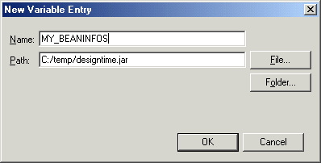

Rather than hard coding the location of BeanInfo classes that are external to Eclipse, they can be defined using a keyword. To do this, open the Window > Preferences dialog and select Java > Classpath Variables as shown below.

A class path variable is used to specify the association between a keyword and the location of the entry it represents. The entry can point to either a JAR file or a folder that exists in the file system.
To specify a JAR file click the New button and enter the name of the variable and the location of the JAR file. Click the File button to browse through the file system and select the JAR.

If the BeanInfo classes are in a package that exists in the file system, then click the Folder button and browse to the parent directory of the package.
Having created the variable MY_BEANINFOS, it can now be included in a BeanInfo path as part of its list of BeanInfo classes. In the BeanInfo Path page (located in the project's Properties dialog), you can click the BeanInfo classes tab and define the location of the project's BeanInfo classes.

Click Add Variable to open the dialog shown below.

To define a classpath variable you type the variable's name or click Browse to select the variable from a list of all defined variables. If the variable is for a folder and the BeanInfo packages are in a sub-folder then you can use the Path Extension field to select the subfolder. Click OK.
Having entered the variable in the BeanInfo classes you still need to use the Modify Paths dialog to enter the names of the packages that contain BeanInfo classes.
Click Modify Paths to open the follow dialog:

Click Choose Packages to select the names of the packages that contain the BeanInfo classes. Depending on the structure of the packages, you may be able to select them or you may have to specify their names.